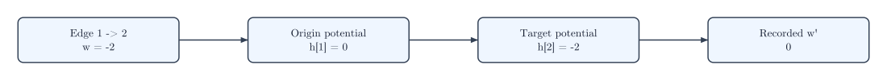
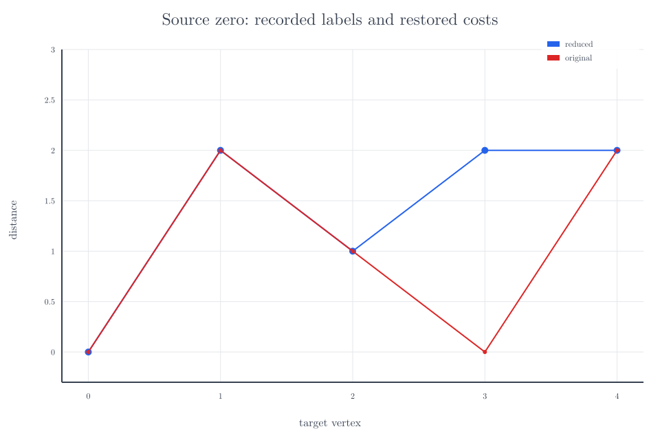
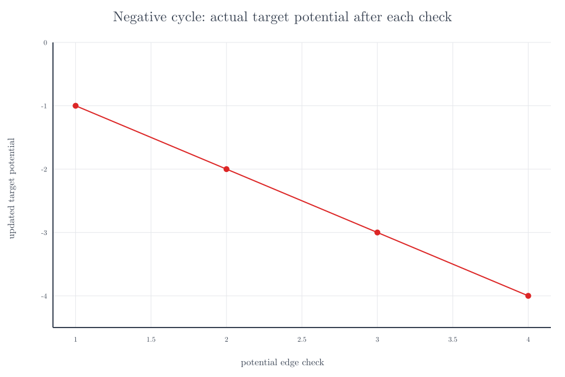
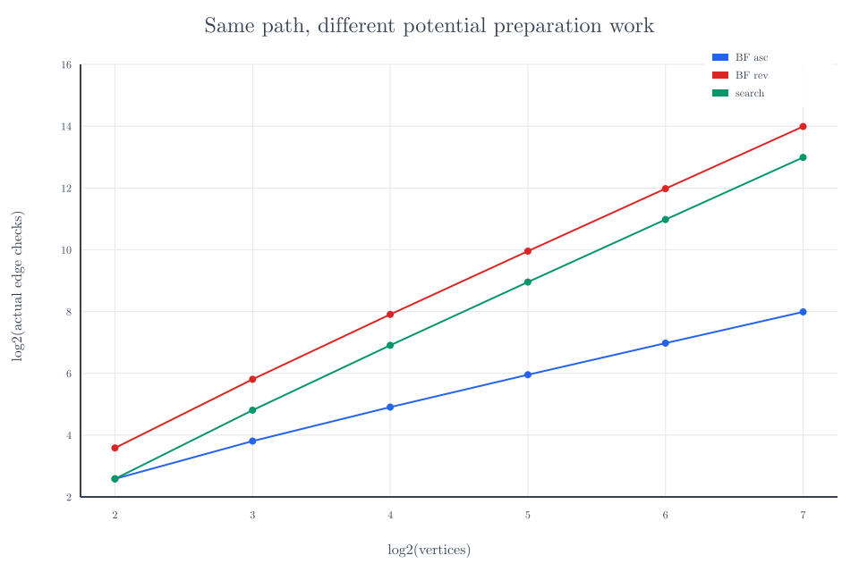

Johnson's all-pairs paths: make negative edges usable
Abstract
Johnson's algorithm finds directed all-pairs shortest distances when negative edges are allowed but negative cycles are absent. A single potential calculation makes every edge nonnegative; repeated Dijkstra searches then restore original-weight distances. We retain the original three-edge example, expose actual native operations, exercise cycles and stale heap entries, and measure how edge order changes preparation work. Checked arithmetic and record limits make numerical and storage boundaries explicit.
Begin with the original negative edge
The original graph has edges 0 to 1 of weight 1, 1 to 2 of weight −2, and 0 to 2 of weight 4. Its indirect path costs −1. All potentials start at zero, as though a synthetic source reached every vertex by a zero-weight edge. The potential at vertex 2 becomes −2, making the negative edge's reduced weight zero. The native diagram reads that actual reweight event; its arrows describe the calculation, not additional graph edges.
#include <dm/dm.hpp>
int main() {
std::filesystem::create_directories("build");
const auto t =
dm::algorithms::johnson_trace(3, dm::algorithms::johnson_demo_edges());
std::print("| pass | edge | target before | candidate | target after |\n| ---: | ---: | ---: | ---: | " "---: |\n");
for (const auto &e : t.events)
if (e.action == dm::algorithms::JohnsonAction::Potential)
std::print("| {} | {} | {} | {} | {} |\n", e.pass, e.edge, e.before,
e.candidate, e.after);
std::print("\n| edge | u | v | original weight | h u | h v | reduced weight |\n| ---: | ---: | ---: | " "---: | ---: | ---: | ---: |\n");
for (std::size_t i = 0; i < t.edges.size(); ++i) {
const auto[u, v, w] = t.edges[i];
std::print("| {} | {} | {} | {} | {} | {} | {} |\n", i, u, v, w,
t.analysis.potentials[u], t.analysis.potentials[v],
t.analysis.reduced_weights[i]);
}
std::print("\n| source | d to 0 | d to 1 | d to 2 |\n| ---: | ---: | ---: | ---: |\n");
for (std::size_t i = 0; i < 3; ++i) {
const auto &r = t.analysis.result.distance[i];
std::print("| {} | {} | {} | {} |\n", i, r[0], r[1], r[2]);
}
if (t.analysis.result.distance[0][2] != -1)
throw std::runtime_error("original answer");
dm::algorithms::johnson_reweight_diagram(t, 1).save_svg(
"build/johnson_reweight.svg");
}| pass | edge | target before | candidate | target after |
|---|---|---|---|---|
| 0 | 0 | 0 | 1 | 0 |
| 0 | 1 | 0 | -2 | -2 |
| 0 | 2 | -2 | 4 | -2 |
| 1 | 0 | 0 | 1 | 0 |
| 1 | 1 | -2 | -2 | -2 |
| 1 | 2 | -2 | 4 | -2 |
| edge | u | v | original weight | h u | h v | reduced weight |
|---|---|---|---|---|---|---|
| 0 | 0 | 1 | 1 | 0 | 0 | 1 |
| 1 | 1 | 2 | -2 | 0 | -2 | 0 |
| 2 | 0 | 2 | 4 | 0 | -2 | 6 |
| source | d to 0 | d to 1 | d to 2 |
|---|---|---|---|
| 0 | 0 | 1 | -1 |
| 1 | inf | 0 | -2 |
| 2 | inf | inf | 0 |

Why changing edge weights preserves the answer
In exact arithmetic, terminal shortest-path potentials satisfy h(v) ≤ h(u)+w(u,v). Consequently
For a path from s to t, intermediate potentials cancel:
Thus paths with the same endpoints retain their relative weights. Adding a fixed constant to every edge would instead penalize paths according to their edge count. Zero reduced weights are valid; the algorithm requires nonnegative edges. Cycles retain their total weight. A negative cycle makes shortest distances unbounded below for affected reachable pairs, and this global all-pairs API rejects the entire problem.
The implementation uses input-order, in-place Bellman–Ford relaxations, stopping after an unchanged pass or reporting a decrease on pass n. Initial zero labels make cycles in disconnected components visible. Once reduced weights are available, each source uses a min-heap ordered by distance and vertex id. Every strict improvement inserts a new entry; older entries are discarded when popped if their key differs from the current label. Histories come from that execution, with no repeated-prefix replay.
Watch obsolete heap entries leave the queue
The following five-vertex control gives vertex 1 an expensive direct route before discovering a cheaper route through vertex 2. It also includes a negative edge and a positive-total cycle. We print the full distance matrix and every source-zero heap pop. The figure compares the actual reduced labels recorded immediately before restoration with the returned original-weight row; these finite values are not separately recomputed searches. Infinity in the matrix means unreachable.
#include <dm/dm.hpp>
int main() {
std::filesystem::create_directories("build");
const std::vector<dm::algorithms::WeightedEdge> edges = {{0, 1, 10},
{0, 2, 1},
{2, 1, 1},
{1, 3, -2},
{2, 3, 5},
{3, 4, 2},
{0, 4, 20},
{4, 1, 1}};
const auto t = dm::algorithms::johnson_trace(5, edges);
std::print("| source | to 0 | to 1 | to 2 | to 3 | to 4 |\n| ---: | ---: | ---: | ---: | ---: | ---: " "|\n");
for (std::size_t i = 0; i < 5; ++i) {
const auto &r = t.analysis.result.distance[i];
std::print("| {} | {} | {} | {} | {} | {} |\n", i, r[0], r[1], r[2],
r[3], r[4]);
}
std::print("\n| actual event | popped vertex | popped key | current label | stale |\n| ---: | ---: | " "---: | ---: | --- |\n");
std::vector<double> x, reduced, restored;
for (std::size_t i = 0; i < t.events.size(); ++i) {
const auto &e = t.events[i];
if (e.source == 0 && e.action == dm::algorithms::JohnsonAction::Pop)
std::print("| {} | {} | {} | {} | {} |\n", i, e.u, e.candidate,
e.before, e.stale);
if (e.source == 0 && e.action == dm::algorithms::JohnsonAction::Restore) {
x.push_back(e.v);
reduced.push_back(e.before);
restored.push_back(t.analysis.result.distance[0][e.v]);
}
}
const auto &w = t.analysis.work;
std::print("\n| BF checks | Dijkstra checks | pushes | pops | stale pops | restored cells |\n| ---: | " "---: | ---: | ---: | ---: | ---: |\n| {} | {} | {} | {} | {} | {} |\n",
w.potential_checks, w.dijkstra_checks, w.heap_pushes,
w.heap_pops, w.stale_pops, w.restored_cells);
auto p = dm::graphics::RPlot::create();
p.line(x, reduced, "reduced", {37, 99, 235}, 2).points(x, reduced, "",
{37, 99, 235}, 5).line(x, restored, "original", {220, 38, 38}, 2).points(x, restored, "", {220, 38, 38}, 3).title("Source zero: recorded labels and restored costs").x_label("target vertex").y_label("distance").y_limits(-.3, 3).save_svg("build/johnson_heap.svg");
}| source | to 0 | to 1 | to 2 | to 3 | to 4 |
|---|---|---|---|---|---|
| 0 | 0 | 2 | 1 | 0 | 2 |
| 1 | inf | 0 | inf | -2 | 0 |
| 2 | inf | 1 | 0 | -1 | 1 |
| 3 | inf | 3 | inf | 0 | 2 |
| 4 | inf | 1 | inf | -1 | 0 |
| actual event | popped vertex | popped key | current label | stale |
|---|---|---|---|---|
| 25 | 0 | 0 | 0 | false |
| 29 | 2 | 1 | 1 | false |
| 32 | 1 | 2 | 2 | false |
| 34 | 3 | 2 | 2 | false |
| 36 | 4 | 2 | 2 | false |
| 38 | 3 | 8 | 2 | true |
| 39 | 1 | 10 | 2 | true |
| 40 | 4 | 20 | 2 | true |
| BF checks | Dijkstra checks | pushes | pops | stale pops | restored cells |
|---|---|---|---|---|---|
| 16 | 22 | 22 | 22 | 4 | 18 |

Handle cycles, isolates and arithmetic failures
A zero-total cycle is allowed. A negative cycle anywhere returns has_negative_cycle=true and an all-infinity matrix, including the diagonal; these infinities are an invalid-problem convention rather than unreachable-path answers. No Dijkstra search starts in that case. The control figure plots the actual decreasing target potential after each check of the two-edge negative cycle. The nth pass is detection evidence in exact arithmetic, not a request to continue optimizing an unbounded objective.
#include <dm/dm.hpp>
int main() {
std::filesystem::create_directories("build");
using E = dm::algorithms::WeightedEdge;
const std::vector<std::pair<const char *, std::pair<std::size_t, std::vector<E>> >> cases = {{"empty", {0, {}}}, {"four isolates", {4, {}}}, {"disconnected negative cycle", {4, {{2, 3, -1}, {3, 2, -1}}}}, {"zero cycle", {2, {{0, 1, 0}, {1, 0, 0}, {0, 0, 0}}}}, {"parallel edges", {2, {{0, 1, 8}, {0, 1, 3}, {0, 1, 3}}}}, {"negative cycle", {2, {{0, 1, -1}, {1, 0, -1}}}}};
std::print("| control | n | negative cycle | potential passes | BF checks | Dijkstra checks | restored " "cells |\n| --- | ---: | --- | ---: | ---: | ---: | ---: |\n");
for (const auto & [name, input] : cases) {
const auto a =
dm::algorithms::johnson_analyze(input.first, input.second);
const auto &w = a.work;
std::print("| {} | {} | {} | {} | {} | {} | {} |\n", name, input.first,
a.result.has_negative_cycle, w.potential_passes,
w.potential_checks, w.dijkstra_checks, w.restored_cells);
}
const auto original =
dm::algorithms::johnson_trace(3, dm::algorithms::johnson_demo_edges());
bool event_cap =
false, cells_cap = false, invalid = false, overflow = false;
try {
(void) dm::algorithms::johnson_trace(3, original.edges,
{6, 9, original.events.size() - 1});
} catch (const std::length_error &) {
event_cap = true;
}
try {
(void) dm::algorithms::johnson_analyze(3, original.edges, {6, 8, 0});
} catch (const std::length_error &) {
cells_cap = true;
}
try {
(void) dm::algorithms::johnson_analyze(2, {{0, 2, 1}});
} catch (const std::invalid_argument &) {
invalid = true;
}
const double m = std::numeric_limits<double>::max();
try {
(void) dm::algorithms::johnson_analyze(3, {{0, 1, m}, {1, 2, m}});
} catch (const std::overflow_error &) {
overflow = true;
}
const bool cycle_fixed =
dm::algorithms::johnson_analyze(3, {{0, 1, -m}, {1, 0, -m}}).result.has_negative_cycle;
if (!event_cap || !cells_cap || !invalid || !overflow || !cycle_fixed)
throw std::runtime_error("controls");
std::print("\nOne-short event and matrix limits reject; invalid endpoint rejects; finite distance " "overflow rejects; the extreme negative cycle is detected.\n");
const auto t = dm::algorithms::johnson_trace(2, {{0, 1, -1}, {1, 0, -1}});
std::vector<double> x, y;
for (const auto &e : t.events)
if (e.action == dm::algorithms::JohnsonAction::Potential) {
x.push_back(x.size() + 1);
y.push_back(e.after);
}
auto p = dm::graphics::RPlot::create();
p.line(x, y, "", {220, 38, 38}, 2).points(x, y, "", {220, 38, 38}, 5).title("Negative cycle: actual target potential after each check").x_label("potential edge check").y_label("updated target potential").y_limits(-4.5, 0).save_svg("build/johnson_controls.svg");
}| control | n | negative cycle | potential passes | BF checks | Dijkstra checks | restored cells |
|---|---|---|---|---|---|---|
| empty | 0 | false | 0 | 0 | 0 | 0 |
| four isolates | 4 | false | 1 | 0 | 0 | 4 |
| disconnected negative cycle | 4 | true | 4 | 8 | 0 | 0 |
| zero cycle | 2 | false | 1 | 3 | 6 | 4 |
| parallel edges | 2 | false | 1 | 3 | 3 | 3 |
| negative cycle | 2 | true | 2 | 4 | 0 | 0 |
One-short event and matrix limits reject; invalid endpoint rejects; finite distance overflow rejects; the extreme negative cycle is detected.

The kernel now calculates in long double and checks produced arithmetic. It rejects nonfinite intermediates, negative rounded reduced weights and restored distances outside finite double range. It never clamps a negative reduced weight to zero. Finite conversion may round a tiny result to zero. This is rounded machine arithmetic, without an exact-real negative-cycle certificate or tolerance model. Long double precision depends on the platform. A frozen old-kernel comparison on this toolchain shows why the guards matter: double saturation previously missed the extreme negative cycle with an isolated third vertex, and finite path overflow could resemble an unreachable result.
Measure preparation separately from repeated search
A directed path with every edge of weight −1 has no cycle. Ascending input order propagates all potentials in one productive pass, followed by an unchanged pass. Reverse order propagates only one more path edge per pass, taking n passes. The graph and distances are identical. From source s, Dijkstra visits exactly n−1−s edges, so all sources together inspect n(n−1)/2 edges. Returned finite entries number n(n+1)/2, while matrix initialization always writes n² cells. The table measures these operations rather than wall-clock time.
#include <dm/dm.hpp>
int main() {
std::filesystem::create_directories("build");
std::vector<double> x, asc, rev, search;
std::print("| n | ascending BF checks | reversed BF checks | Dijkstra checks | matrix cells | restored " "cells |\n| ---: | ---: | ---: | ---: | ---: | ---: |\n");
for (std::size_t n = 4; n <= 128; n *= 2) {
const auto a =
dm::algorithms::johnson_analyze(n,
dm::algorithms::johnson_path_edges(
n));
const auto b =
dm::algorithms::johnson_analyze(n,
dm::algorithms::johnson_path_edges(
n, true));
if (a.result.distance != b.result.distance ||
a.work.dijkstra_checks != n * (n - 1) / 2 ||
a.work.potential_checks != 2 * (n - 1) ||
b.work.potential_checks != n * (n - 1))
throw std::runtime_error("work identities");
const auto &w = a.work;
std::print("| {} | {} | {} | {} | {} | {} |\n", n, w.potential_checks,
b.work.potential_checks, w.dijkstra_checks, w.matrix_cells,
w.restored_cells);
x.push_back(std::log2(n));
asc.push_back(std::log2(w.potential_checks));
rev.push_back(std::log2(b.work.potential_checks));
search.push_back(std::log2(w.dijkstra_checks));
}
auto p = dm::graphics::RPlot::create();
p.line(x, asc, "BF asc", {37, 99, 235}, 2).points(x, asc, "", {37, 99, 235},
4).line(x, rev, "BF rev",
{220, 38, 38}, 2).points(x, rev, "", {220, 38, 38}, 4).line(x, search, "search", {5, 150, 105}, 2).points(x, search, "", {5, 150, 105}, 4).title("Same path, different potential preparation work").x_label("log2(vertices)").y_label("log2(actual edge checks)").y_limits(2, 16).save_svg("build/johnson_work.svg");
}| n | ascending BF checks | reversed BF checks | Dijkstra checks | matrix cells | restored cells |
|---|---|---|---|---|---|
| 4 | 6 | 12 | 6 | 16 | 10 |
| 8 | 14 | 56 | 28 | 64 | 36 |
| 16 | 30 | 240 | 120 | 256 | 136 |
| 32 | 62 | 992 | 496 | 1024 | 528 |
| 64 | 126 | 4032 | 2016 | 4096 | 2080 |
| 128 | 254 | 16256 | 8128 | 16384 | 8256 |

For n vertices and m directed edges, the potential phase costs O(nm). This lazy binary heap can retain O(m+1) entries per source, including parallel-edge alternatives; its logarithm is therefore log(m+2). A bound covering empty/disconnected multigraphs and matrix storage is O(n²+nm+n(m+1)log(m+2)), with O(n²+n+m) storage before tracing. For simple graphs, log(m+2) is O(log(n+1)). The legacy shorthand O(nm+nm log n) omits the n² matrix term and needs qualifications for parallel edges. Sparse input does not make this full matrix output sparse.
What the checks establish
Analyze returns owned output, potentials, reduced edges and work; trace additionally owns the input graph and actual scalar operations. There are no caller views or shared mutable state. Defaults cap complete n+m input records, complete n² distance cells and online actual events at one million each. Zero disables an optional ceiling. Complete validation/admission precedes matrix and graph copies; each event is admitted before its operation. A failed call throws without exposing a partial result. Untraced calls ignore the event limit, and the legacy interface disables optional ceilings. Limits count records, excluding vector capacity, byte counts, allocator overhead and peak RAM.
Seventeen native cases pass with sanitizers and the normal test runner. An independent rational Floyd–Warshall and exact event/heap oracle checks 5,416 graphs, 423,252 actual operations, 2,427 global negative-cycle cases and 7,267 stale pops. Frozen comparisons preserve 194,749 matrix cells bitwise on 5,001 integer/dyadic inputs. In 1,000 decimal-weight acyclic controls, wider arithmetic changes 5,491 cells by at most about 1.34e−15 on this toolchain; bitwise preservation for arbitrary decimals is not claimed. The examples are controlled graph problems, so no external dataset is needed. Together they show how potentials enable repeated nonnegative searches, and why edge order, output size and numerical domain remain separate concerns.
References
Donald B. Johnson (1977), “Efficient algorithms for shortest paths in sparse networks”, Journal of the ACM 24(1), 1–13, doi:10.1145/321992.321993. Publication metadata is verified; the publisher PDF was inaccessible in this run. The telescoping and feasible-potential derivations can also be compared with Victor Adamchik's CMU 15-451 lecture 13, pages 5–7. This implementation's lazy heap, explicit matrix term, arithmetic checks and in-place pass accounting are specified above.